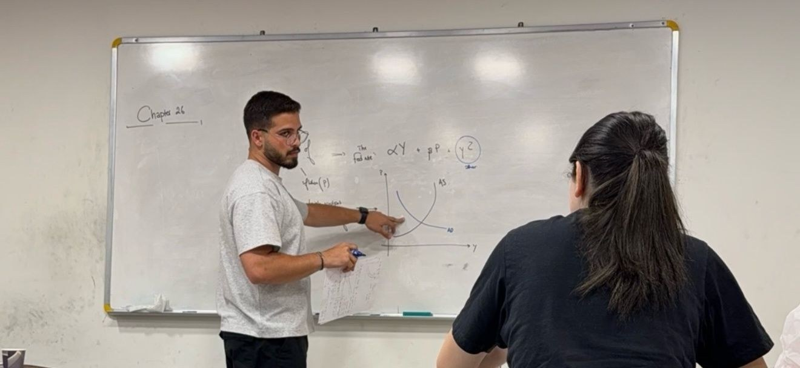
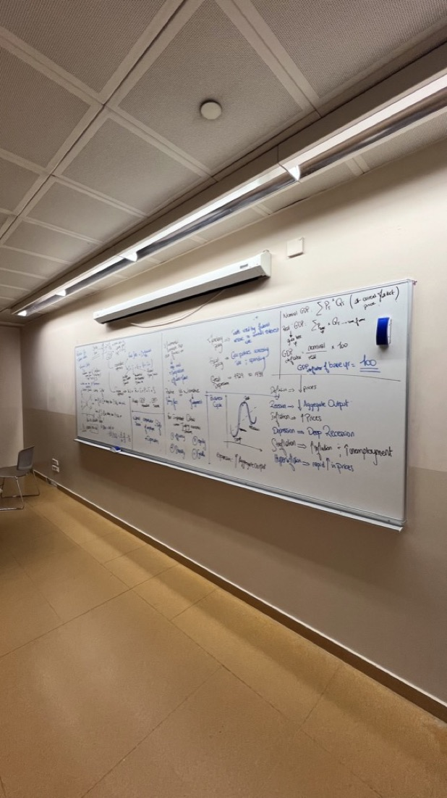
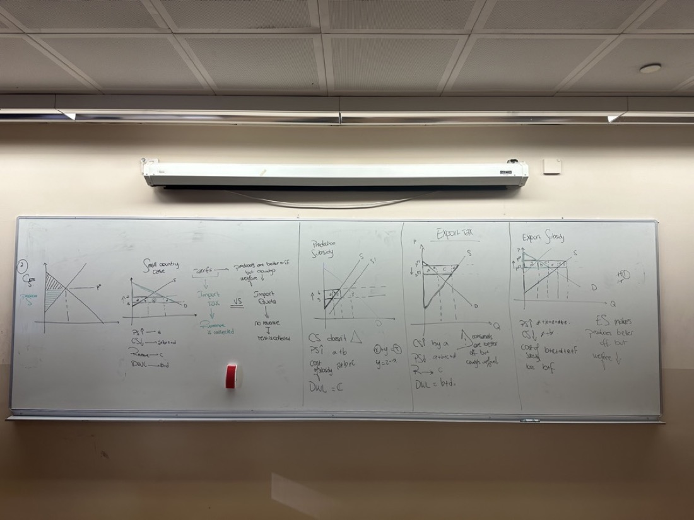
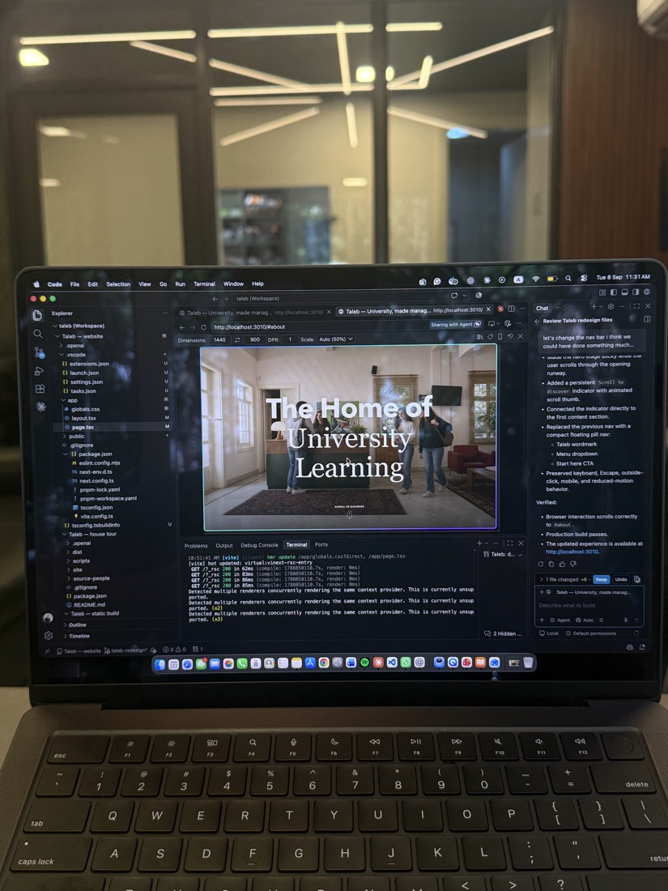

Teaching / Visual explanations / A continuing practice
Learning, made tangible
Before I coordinated instructors or built learning tools, I helped one classmate understand macroeconomics.
The first student
He was about seven years older than me. Explaining the course to him helped me discover a skill: making a complex idea approachable through visuals, examples, and a different way of looking at it.
Practice through explanation
I began helping classmates for free. Teaching made me study more carefully. If an explanation didn’t work, I had to find another one. Over time, demand grew and I coordinated a network of around twelve instructors.
What I teach
My work has included microeconomics, macroeconomics, international economics, statistics, business, marketing, management, and academic English. I have tutored with Test Prep Institute since November 2024, alongside later business-development responsibilities.
What I keep working on
I use notes, diagrams, examples, and interactive tools to help students reason through a concept. The aim is understanding they can use for themselves. Having struggled academically, I care about the confidence that grows alongside that understanding.
A practice that keeps evolving, one explanation and one student at a time.



